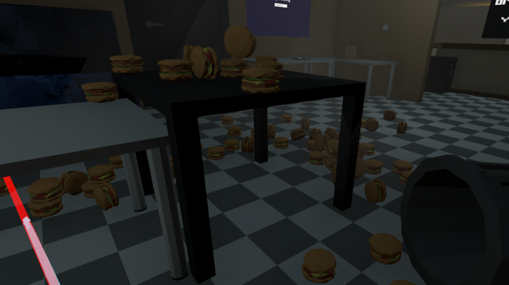
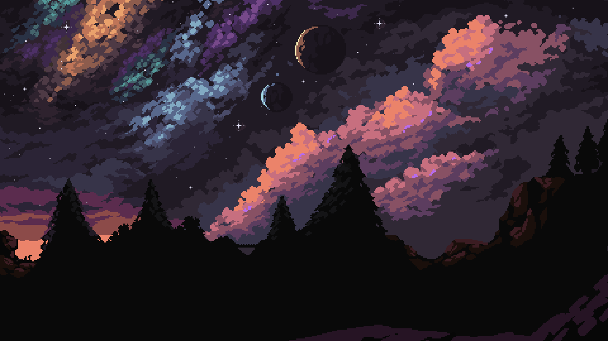
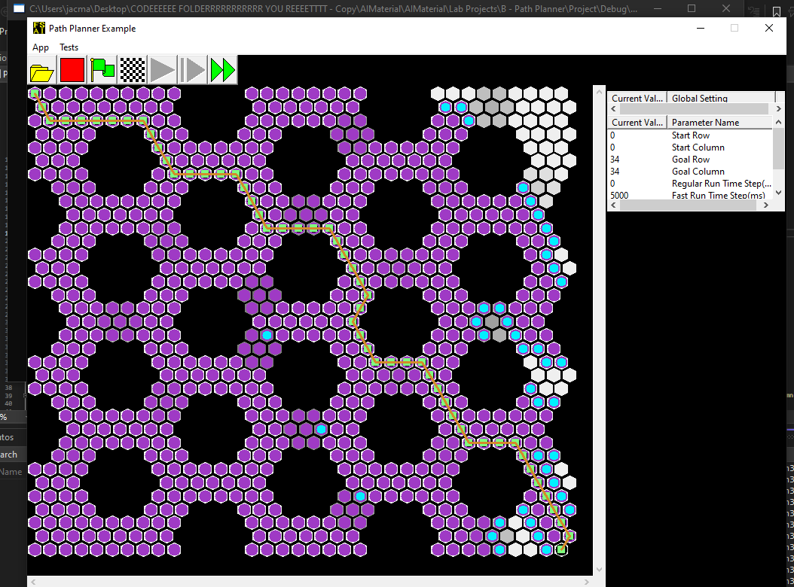
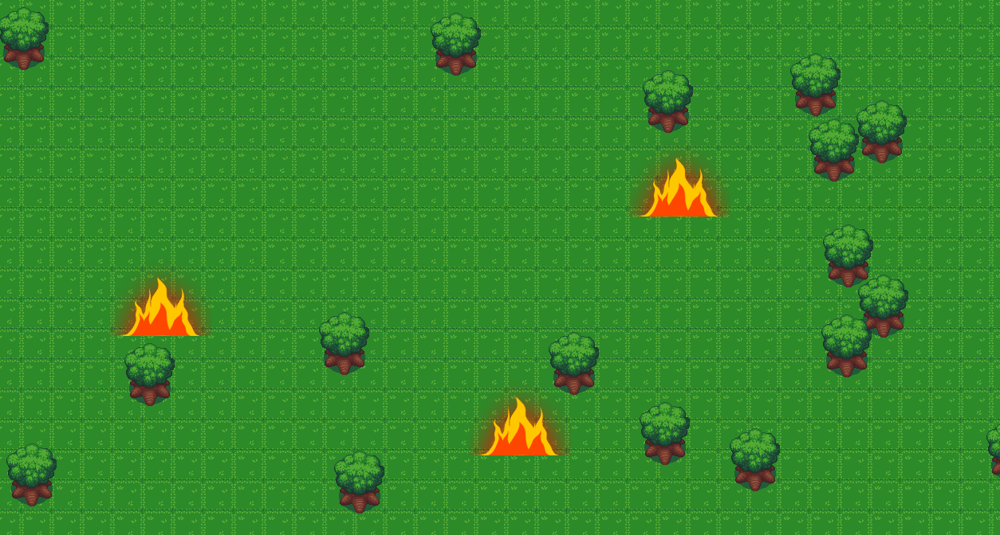
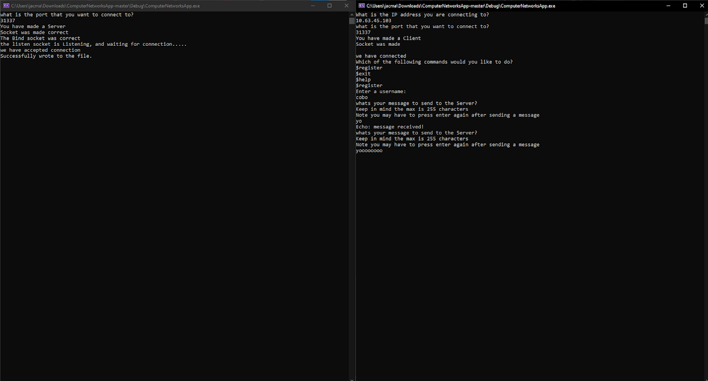
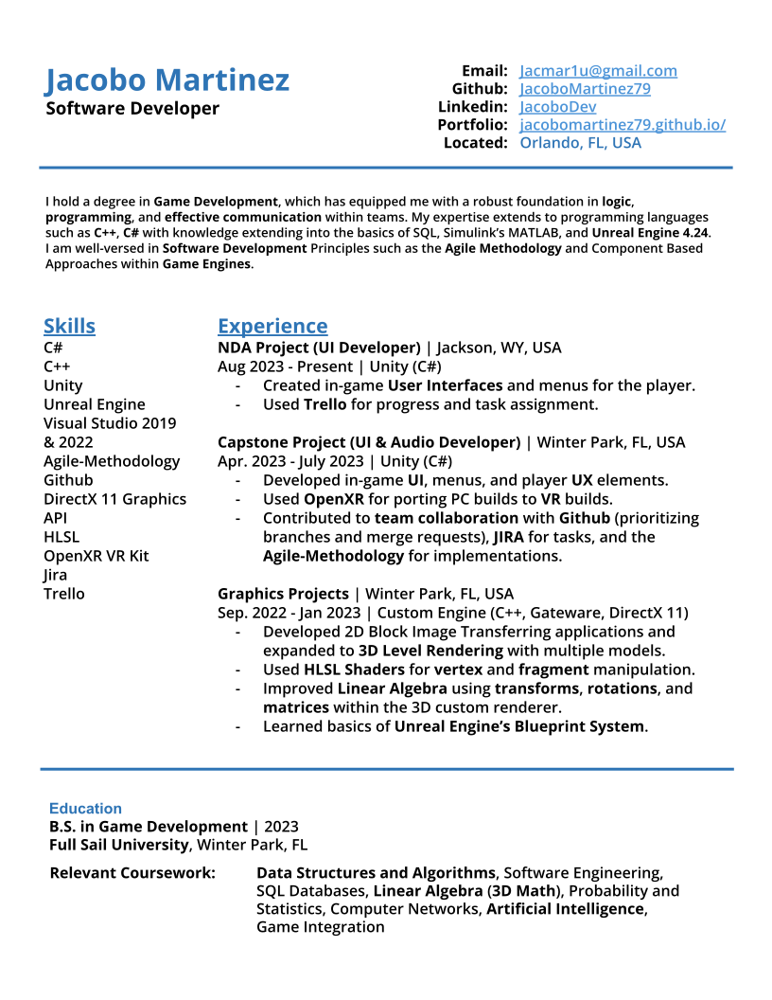

Game Developer & Software Engineer
Building interactive experiences — from VR simulators and survival games to graphics engines and AI systems.
Specializing in C++, C#, Unity, and DirectX 11.
Projects

Fast food simulator. Gameplay is your day-to-day job at Big Grease working the graveyard shift. Your ultimate goal is to make rent for the week. Simulate the exciting life of fast food employment while flexing your time management skills. However, beware the supernatural events that occur during your monotonous job.
Itch.io Page
Itch.io Page

"Wizards Day" is a top-down survival game where players need to survive for five rounds. Players collect experience points to increase the damage of their fireball attack against enemies.

Implemented a comprehensive path planning system, including A* for optimal pathfinding and flocking algorithms for realistic group behaviors. Built a SearchGraph from tile data and managed hexagonal tile adjacency within a 2D array, with implementations ranging from BFS to A*.

Implemented a particle system using sorted and unsorted pools. Sorted pools managed active particles for efficient rendering, while unsorted pools handled inactive particles for quick allocation and deallocation. This optimized performance for large numbers of particles with smooth, responsive visual effects.

Projects ranging from creating graphics from scratch — including a mini linear algebra library for matrix math — to following algorithms to draw lines, working with the DirectX 11 API, and a touch of the Vulkan API.

Developed a server-client chat application using the WinSock API and multiplexing techniques. Features robust communication between clients and server, enabling real-time chat functionality with support for up to five simultaneous connections.

Desktop GUI applications built with Windows Forms and wxWidgets. Features Conway's Game of Life (cellular automata) implemented in C# and a wxWidgets calculator in C++ using the command pattern.
About Me
Hi, I'm Jacobo Martinez — a game developer and software engineer with a focus on C++, C#, Unity, and graphics programming. I'm passionate about building interactive experiences, from VR capstone projects to low-level graphics engines.
I enjoy working across the full stack of game development: engine architecture, AI systems, networking, UI design, and project management. I thrive in roles where I can contribute technically while also thinking about the player experience.
